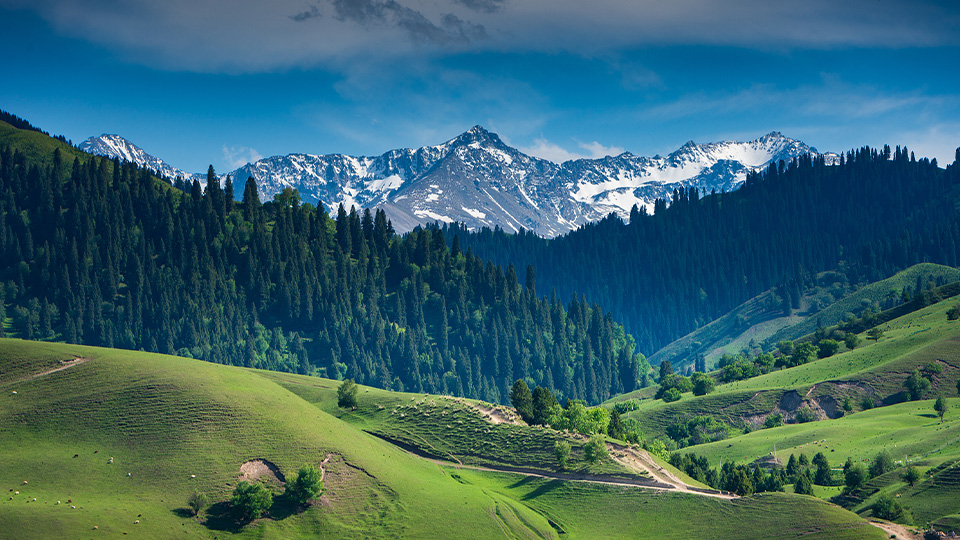

China travel

China, as one of the four ancient civilizations of the world, has a history and cultural heritage spanning over five thousand years. Here, there are both magnificent natural landscapes and splendid cultural relics. From the snowy plateau to the water towns of the south, from modern cities to ancient villages, every place holds unique stories and customs. The original intention behind establishing China Travel Network was to provide a comprehensive and personalized travel guide for travelers from all over the world. Whether you are on a short trip or a deep exploration, you can find useful information and inspiration here. Here, you can experience the vastness and diversity of the Chinese land: The grandeur of the northern deserts and the might of the Great Wall tell the story of the profound history. The gracefulness of the water towns in the south and the elegance of the gardens showcase the poetic charm of the East. The mystery of the high-altitude snow-capped mountains and the vastness of the grassland awaken the deep yearnings within people's hearts. The bustling modern city and the serene ancient ruins together create a picture that blends the past and the present. China is not merely a destination for travel; it is also a journey of exploration of culture and the soul. The mountains, rivers, lakes and seas here embody the grandeur of nature; the historical sites here reflect the brilliance of civilization; the festivals and delicacies here showcase the diversity and enthusiasm of life. China Travel Network is dedicated to presenting you with the most comprehensive and authentic travel information. From scenic spot introductions to travel guides, from cultural backgrounds to travel tips, we hope to assist every traveler, helping them prepare well before the trip, discover surprises during the journey, and leave unforgettable memories upon their return. Travel is not merely about viewing the scenery; it is also a dialogue of the soul. We believe that every traveler can find their own story on the land of China. China Travel Network - Take you into the real and colorful China.